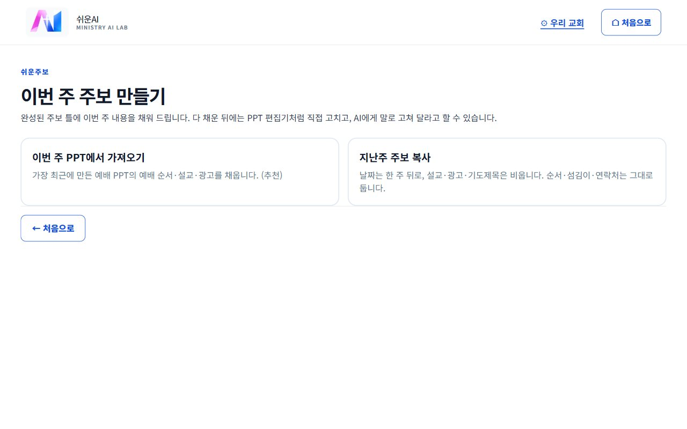
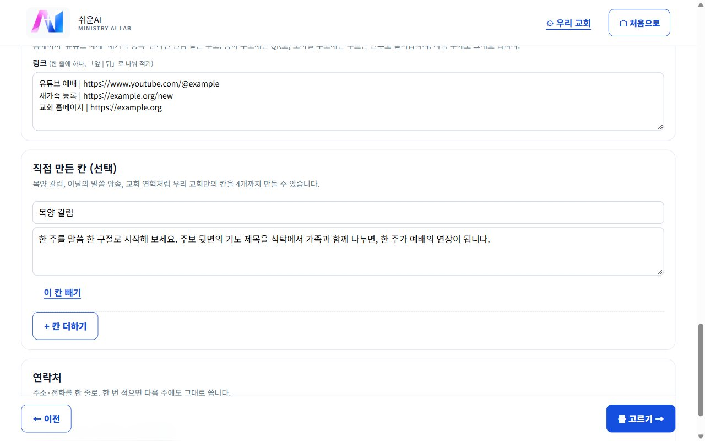
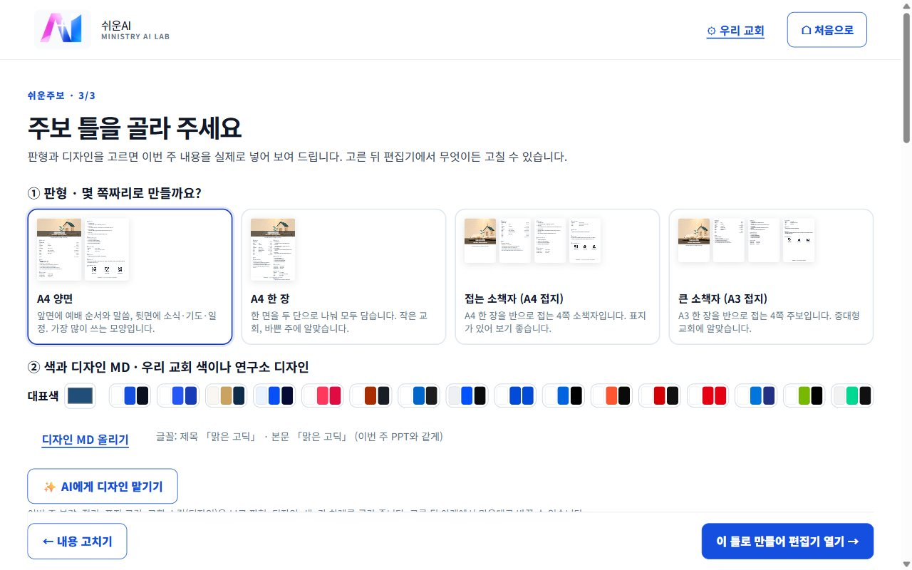
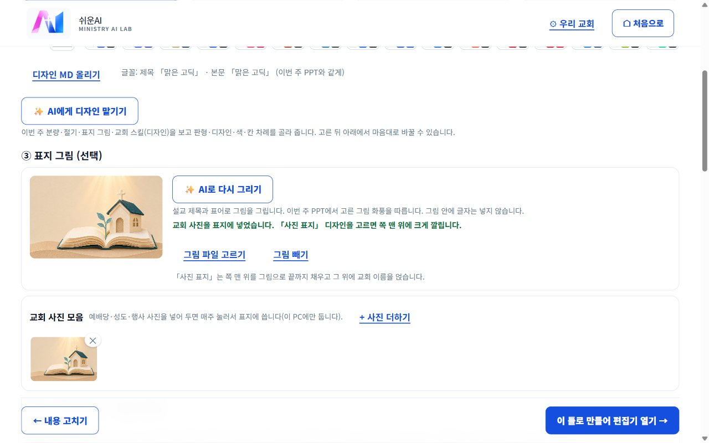
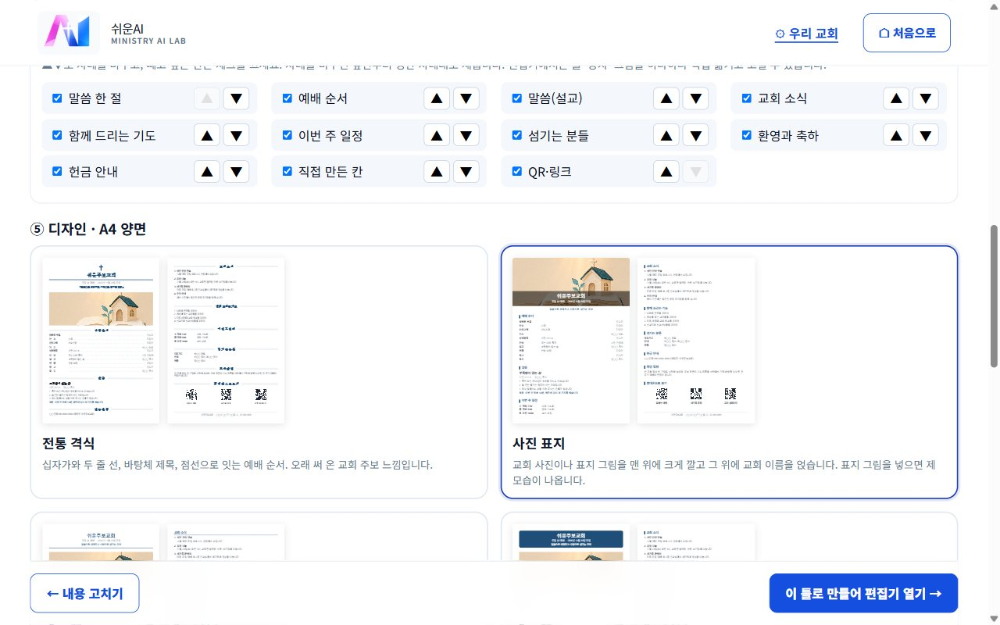
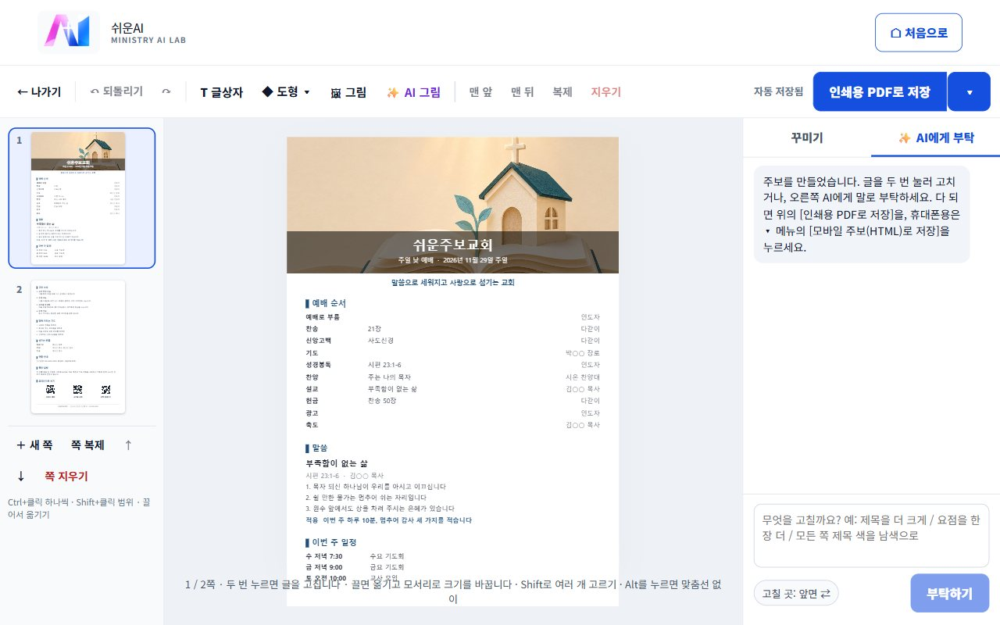
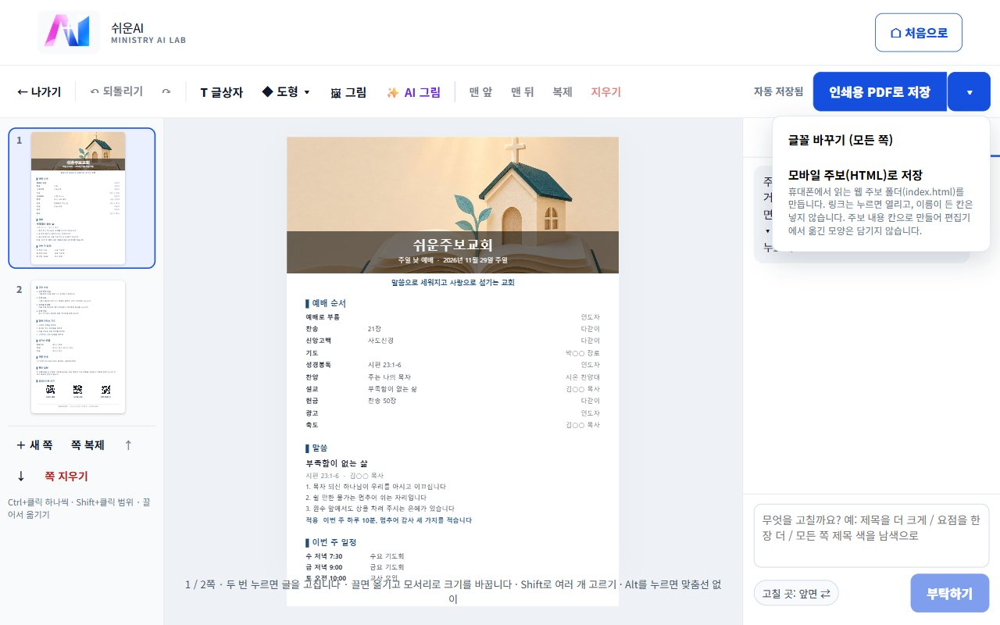
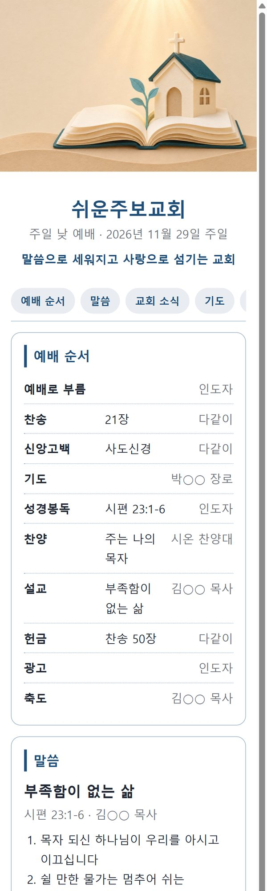

Windows 10 · 11
64비트 · 설치 프로그램(.exe) · 약 200MB · 0.32.0부터 쉬운주보 2차 기능
준비 중- 받은 파일을 엽니다.
- “Windows의 PC 보호” 창이 뜨면 추가 정보 → 실행을 누릅니다. 아직 코드 서명 전이라 나오는 창입니다.
- 바탕화면의 쉬운주보 아이콘을 누릅니다. AI 기능을 쓰려면 처음 한 번 쓸 AI(Claude·Codex 등)에 로그인합니다.
교회 주보 · Windows · 무료
이번 주 예배 PPT의 순서·설교·광고로 주보 칸을 채워 드립니다. 디자인을 고르고, 캔바처럼 직접 고치거나 AI에게 말로 부탁한 뒤, 인쇄용 PDF와 휴대폰 주보로 저장하세요.
쉬운 PPT를 설치하면 바탕화면에 쉬운주보 아이콘이 함께 생깁니다. 주보 내용은 이 PC에만 저장됩니다.


카드뉴스 4장
목회자 단톡방·밴드·인스타에 그대로 나눠 주세요. 그림을 누르면 크게 보이고, 아래 단추로 받을 수 있습니다.
사용법 · 실제 화면으로 따라 하기
아래 화면은 지어낸 견본 「쉬운주보교회」로 실제 프로그램을 찍은 것입니다. 차례대로 따라 하시면 첫 주보가 완성됩니다.
01
도움말 처음 쓰시면 「지난주 주보 복사」를 눌러도 빈 주보로 시작합니다.

크게 보기 ↗02
도움말 예배 순서는 한 줄에 「순서 | 내용 | 담당」, 교회 소식은 「제목 | 내용」으로 적습니다. 비워 둔 칸은 주보에 만들지 않습니다.
 크게 보기 ↗
크게 보기 ↗
03
도움말 한 번 적은 연락처·헌금·링크·섬기는 분은 다음 주 주보에 그대로 이어집니다.

크게 보기 ↗04
도움말 소책자는 저장할 때 접는 순서로 놓은 「인쇄용」 PDF가 함께 나옵니다.

크게 보기 ↗05
도움말 교회 사진 모음에 예배당·성도 사진을 넣어 두면 매주 한 번 눌러 표지에 씁니다(이 PC에만 둡니다).

크게 보기 ↗06
도움말 넘치는 곳이 있으면 견본 아래에 ⚠로 어느 칸을 줄이면 되는지 알려 줍니다.

크게 보기 ↗07
도움말 고칠 곳(앞면·뒷면·주보 전체)은 아래 단추로 바꿉니다. 고친 내용은 저절로 저장됩니다.

크게 보기 ↗08
index.html 폴더가 생깁니다. 교회 홈페이지·블로그에 올리면 링크로 나눌 수 있습니다.도움말 모바일 주보에는 새가족·생일처럼 이름이 든 칸을 넣지 않습니다.

크게 보기 ↗다 됐습니다! 다음 주에는 지난주 주보 복사 → 설교·소식만 바꾸고 → 「우리 교회 틀」을 고르면 몇 분이면 끝납니다. 지금 내려받기 →
디자인 10가지 × 판형 4가지
오래 써 온 교회 주보의 격식부터, 교회 사진을 크게 쓰는 표지까지. 글이 많으면 글자를 알맞게 줄이고, 적으면 키워 빈 곳 없이 맞춥니다.


할 수 있는 것

편집기 저장 메뉴의 [모바일 주보(HTML)로 저장]을 누르면 index.html 폴더가 생깁니다. 교회 홈페이지·블로그에 올리면 링크 하나로 나눌 수 있습니다.
홈페이지·유튜브 예배·새가족 등록 주소를 한 번 적으면, 종이 주보에는 QR 코드로, 휴대폰 주보에는 단추로 매주 들어갑니다.
예배당·성도·행사 사진을 넣어 두고 매주 눌러서 표지에 씁니다. 없으면 AI가 설교 제목으로 표지 그림을 그립니다.
칸 차례를 바꾸고, 필요 없는 칸은 빼고, 목양 칼럼 같은 우리 교회만의 칸을 만듭니다. 마음에 들면 「우리 교회 틀」로 저장.
쉬운 PPT에 올린 디자인 MD와 교회 스킬을 주보에서도 씁니다. AI가 우리 교회 색과 말투를 따라 고르고 다듬습니다.
지키는 것
내려받기 · v0.33.0
예배 PPT 프로그램 「쉬운 PPT」와 한 프로그램입니다. 설치하면 바탕화면과 시작 메뉴에 쉬운주보 아이콘이 생기고, 누르면 주보 화면부터 열립니다.
64비트 · 설치 프로그램(.exe) · 약 200MB · 0.32.0부터 쉬운주보 2차 기능
준비 중AI 없이도 주보는 만들 수 있습니다. 요약·다듬기·디자인 맡기기·표지 그림에만 AI 계정이 쓰입니다.
표지 그림은 Codex 로그인이 필요하고 몇 분 걸릴 수 있습니다.
성경 본문·찬송 가사는 프로그램에 들어 있지 않습니다. 쓰시는 성경에서 붙여 넣으세요.